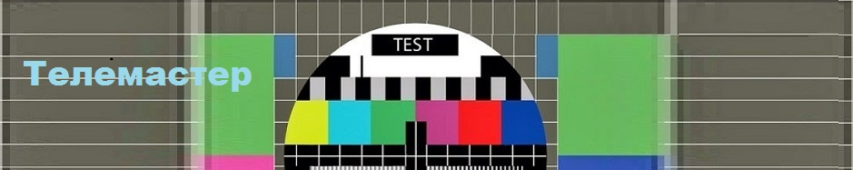

Ремонт телевизоров в Херсоне
Ремонтируются телевизоры на дому, только кинескопной конструкции
(объёмная коробка сзади)
любых фирм производителей.
Телемастер производит
ремонт телевизоров во всех районах города Херсона
(Центр, ХБК, Таврический, Шуменский, Жилпоселок,
Остров).
Ремонт производится на дому у заказчика,
быстро и качественно, по умеренным расценкам.
Мастер имеет стаж работы в телеателье.
Чтобы
сделать заказ на ремонт телевизора, позвоните
телемастеру, скажите название телевизора, опишите
неисправность, например (телевизор не включается), адрес
и удобное для Вас время прихода мастера.
Если у вас неисправен кинескопный телевизор
☎ 095-008-9193 для звонка нажмите здесь
звонить с 9 до 20ч.
Ремонт телевизоров Херсон
LG - ЭЛЖИ, TOSHIBA - Тошиба, PANASONIC - Панасоник,
DAEWOO - Дэу, RAINFORD - Рэйнфорд, VESTEL - Вестел, WEST
- Вест, PHILIPS - Филипс, Samsung - Самсунг, TLC - ТЛСИ,
JVC - ДжиВиСи, Sharp - Шарп, Thomson - Томсон
Телемастер Херсон
Наиболее распространенные неисправности кинескопных телевизоров:
На экране разноцветные пятна, цветовые разводы.
Нет изображения, посредине экрана тонкая вертикальная полоса.
Экран светится ярким цветом красным, синим или зелёным, изображения не видно.
На изображении преобладает один цвет.
Телевизор не включается, пытается включиться, из него исходят скрипящие повторяющиеся звуки.
По центру экрана тонкая горизонтальная полоса.
Экран заужен сверху или снизу.
Повышенная яркость изображения, поверх которого просматриваются тонкие горизонтальные полосы.
Телевизор не включается светодиод не загорается.
Телевизор не включается из дежурного режима.
У телевизора при работе исчезает изображение, остаётся звук.
При включении телевизора слышен громкий треск электрических разрядов.
Рокот из динамиков телевизора
Facebook
Twitter
Pinterest
|